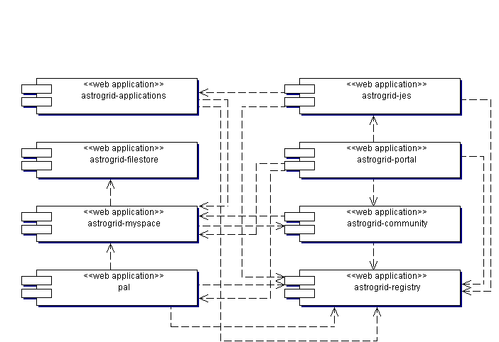

AstroGrid's run-time components are grouped into sub-systems. Every sub-system provides on-line services; most provide SOAP services; some are also clients of of other sub-systems. Currently, there are no sub-systems that are desktop clients; the sub-system providing the UI is a web portal.
Sub-systems may be independently deployed on a host computer, and they are packaged to ease deployment. All the sub-systems are packaged as J2EE web-applications. They all require to be deployed into a J2EE servlet-engine (but the EJB side of J2EE is not required). In practice, the servlet engine must be Jakarta-Tomcat 5. Older versions of Tomcat may work but are not supported and other makes of engine have not even been tried.
This is the current list of sub-systems.
| Sub-system | Purpose | UML model |
|---|---|---|
| applications | Data-transforming services using the CEA. C.f. data-selection services in PAL. | astrogrid-applications |
| Community |
Registration and management of user accounts. Supports authentication and authorization in use of other services. |
astrogrid-community |
| Filestore |
Virtual storage: one shared directory of files per storage node (c.f. myspace). |
astrogrid-filestore |
| JES |
"Job Execution Service". Workflow execution: job managment and monitoring. |
astrogrid-jes |
| MySpace |
Organization of virtual storage: trees of virtual directories refering to separate storage-nodes (c.f. filestore). |
astrogrid-myspace |
| PAL |
"Publishers
AstroGrid Library". Tools for data publishers; data-selection services.
C.f. Data-transforming services in Applications. |
|
| Portal |
User interface: web portal.. |
|
| Registry |
Resource registry on the IVOA model: used to find other services. |
astrogrid-registry |
The majority of the sub-systems provide web services using the Simple Image Access Protocol (SOAP) and are based on Apache Axis. They follow a common pattern; it may help to read the Axis pattern before reading the models of specific packages.

Relationship of sub-systems to frameworks.
There is no rigorous leveling of the services into tiers. Any sub-system may, in principle, call any other. In practice there are well-established dependencies between sub-systems. These dependencies represent messages (almost always SOAP messages) between clients and services.
Run-time dependencies between deployed web applications.
Deployment is flexible; the web applications may be dispersed among many computers or they may be grouped. The extreme deployment has every web application on a separate node.

Maximal deployment of services: evey sub-system on a separate node.
A more-typical deployment groups sub-systems according to function and the intentions of the operators.
Typical deployment of sub-systems: services grouped by intent of operators.
The portal site runs sub-systems to support a user community:
The registry site runs astrogrid-registry plus astrogrid-exist to provide the storage for registry metadata.
The three archive sites run different mixes of data-selection, data-processing and data-storage sub-systems. Archive 3 runs the minimum: just PAL, to give stateless access to an archive. Archive 2 runs PAL with local caching of results. Archive 1 runs both data-selection and data-processing services and uses local storage to optimize the passing of data between the two. The archive with no local storage can send results to other deployments of astrogrid-filestore.
A plausible AstroGrid would have one registry (registries are
mirrors of each other, so duplicates are only needed to reduce
down-time); a handful of portals (at least one is needed; HEIs and
data-centres may want to operate customized versions); many archives.